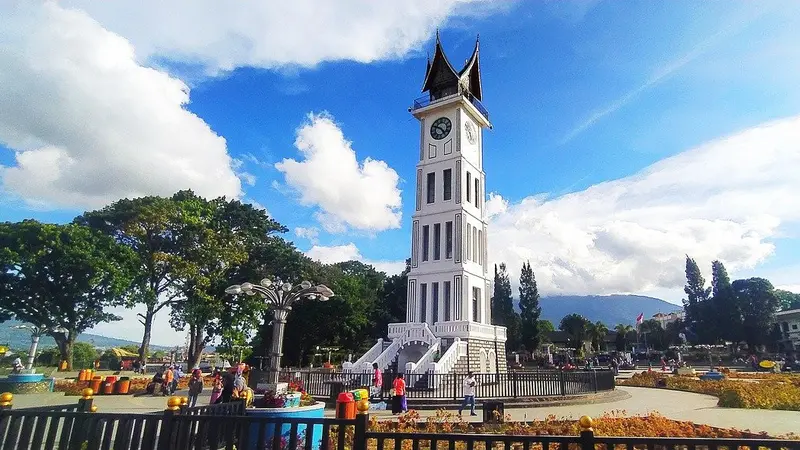

Kota Bukittinggi merupakan kota dengan perekonomian terbesar kedua di Provinsi Sumatra Barat, Indonesia.
Kota Bukittinggi semula merupakan pasar (pekan) bagi masyarakat Agam Tuo. Setelah kedatangan Belanda, kota ini menjadi kubu pertahanan mereka untuk melawan Kaum Padri dan kota Bukittinggi sebelum nya bernama nagari kurai limo jorong ,Pada tahun 1825, Belanda mendirikan benteng di salah satu bukit yang terdapat di dalam kota ini. Tempat ini dikenal sebagai benteng Fort de Kock, sekaligus menjadi tempat peristirahatan opsir-opsir Belanda yang berada di wilayah jajahannya. Pada masa pemerintahan Hindia Belanda, kawasan ini selalu ditingkatkan perannya dalam ketatanegaraan yang kemudian berkembang menjadi sebuah stadsgemeente (kota) dan juga berfungsi sebagai ibu kota Afdeeling Padangsche Bovenlanden dan Onderafdeeling Oud Agam.
Pada masa pendudukan Jepang, Bukittinggi dijadikan sebagai pusat pengendalian pemerintahan militernya untuk kawasan Sumatra, bahkan sampai ke Singapura dan Thailand. Kota ini menjadi tempat kedudukan komandan militer ke-25 Kempetai, di bawah pimpinan Mayor Jenderal Hirano Toyoji. Kemudian kota ini berganti nama dari Stadsgemeente Fort de Kock menjadi Bukittinggi Si Yaku Sho yang daerahnya diperluas dengan memasukkan nagari-nagari sekitarnya seperti Sianok Anam Suku, Gadut, Kapau, Ampang Gadang, Batu Taba, dan Bukit Batabuah. Sekarang nagari-nagari tersebut masuk ke dalam wilayah Kabupaten Agam.
Pada sumber lainnya menyebutkan bahwa ada sebuah pasar di kota tersebut yang diberi nama Bukik Kubangan kabau. Terjadi pertemuan adat Suku Kurai yang kemudian mengganti nama menjadi Bukik Nan Tatinggi. Nama Bukik (Bukit) yang terakhir itulah yang kemudian menjadi Bukittinggi. Sedangkan nama pasar Kurai menjadi Pasar Bukittinggi.
Kota Bukittinggi terletak pada rangkaian Bukit Barisan yang membujur sepanjang pulau Sumatra, dan dikelilingi oleh dua gunung berapi yaitu Gunung Singgalang dan Gunung Marapi. Kota ini berada pada ketinggian 909–941 meter di atas permukaan laut, dan memiliki hawa sejuk dengan suhu berkisar antara 16.1–24.9 °C. Sementara itu, dari total luas wilayah Kota Bukittinggi saat ini (25,24 km²), 82,8% telah diperuntukkan menjadi lahan budidaya, sedangkan sisanya merupakan hutan lindung.
Kota ini memiliki topografi berbukit-bukit dan berlembah, beberapa bukit tersebut tersebar dalam wilayah perkotaan, di antaranya Bukit Ambacang, Bukit Tambun Tulang, Bukit Mandiangin, Bukit Campago, Bukit Kubangankabau, Bukit Pinang Nan Sabatang, Bukit Canggang, Bukit Paninjauan, dan sebagainya. Selain itu, terdapat lembah yang dikenal dengan Ngarai Sianok dengan kedalaman yang bervariasi antara 75–110 m, yang di dasarnya mengalir sebuah sungai yang disebut dengan Batang Masang.
Berbagai tempat wisata di Bukittinggi memiliki keragaman yang sayang untuk dilewatkan. Mulai dari wisata sejarah, wisata budaya, wisata alam hingga tempat kuliner tersedia di kota ini. Tidak heran banyak wisatawan mancanegara yang menyempatkan diri berkunjung ke Bukittinggi.
Tempat wisata di Bukittingi yang pertama dan tidak boleh dilewatkan adalah Jam Gadang. Berkunjung ke Bukittingi tentunya tidak akan lengkap bila belum mengunjungi Jam Gadang. Jam Gadang bisa dikatakan sebagai pusat keramaian Kota Bukittinggi sehari-harinya dan merupakan ikon kota itu. Bahkan, ramainya pengunjung di Jam Gadang tidak hanya terjadi saat liburan saja, bahkan di hari-hari biasa sekalipun. Hal ini karena Jam Gadang juga terletak dekat pasar atas di Bukittingi.
Merupakan wisata alam berupa lembah, tempat wisata di Bukittingi selanjutnya adalah Ngarai Sianok. Tidak kalah indah dibandingkan dengan Lembah Harau yang terletak di Payakumbuh, Ngarai Sianok diibaratkan sebagai Grand Canyon-nya Bukittinggi. Ngarai Sianok ini memiliki panorama alam yang sangat indah, dan kamu juga bisa bermain air dan sekadar nongkrong bersama teman di bawah ngarai ini. Bila ingin menikmati pemandangan ngarai dari atas, kamu bisa masuk ke Taman Panorama dan menyaksikan keindahan Ngarai Sianok dari sini.

Lobang Jepang merupakan salah satu tempat wisata di Bukittingi yang berdekatan dengan Ngarai Sianok. Bunker atau terowongan bawah tanah ini dibangun pada masa penjajahan Jepang. Lobang Jepang ini dulunya berfungsi sebagai tempat berlindung tentara Jepang sekaligus penjara bawah tanah untuk tawanan perang. Lobang Jepang ini memiliki begitu banyak cabang dan terowongan yang sangat panjang.